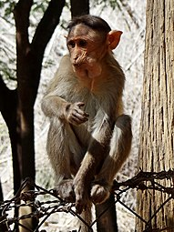
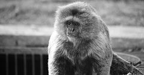
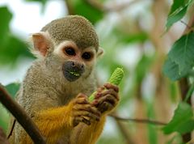
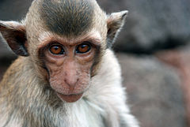
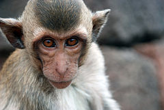
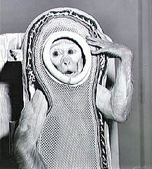
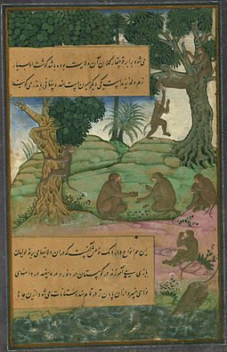
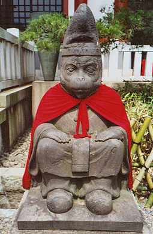

Main page
Contents
Featured content
Current events
Random article
Interaction
Help
About Wikipedia
Community portal
Recent changes
Contact page
Tools
What links here
Related changes
Upload file
Special pages
Permanent link
Page information
Wikidata item
Cite this page
Languages
বাংলা
ગુજરાતી
हिन्दी
ಕನ್ನಡ
മലയാളം
मराठी
ਪੰਜਾਬੀ
தமிழ்
తెలుగు
Monkey
From Wikipedia, the free encyclopedia
For other uses, see Monkey (disambiguation). For the similar monophyletic clade, see Simian.Monkeys are non-hominoid simians, generally possessing tails and consisting of about 260 known living species. Many monkey species are tree-dwelling (arboreal), although there are species that live primarily on the ground, such as baboons. Most species are also active during the day (diurnal). Monkeys are generally considered to be intelligent, particularly Old World monkeys. There are two major types of monkey: New World monkeys (platyrrhines) from South and Central America and Old World monkeys (catarrhines of the superfamily Cercopithecoidea) from Africa and Asia. Apes (hominoids)—consisting of gibbons, orangutans, gorillas, chimpanzees, and humans—are also catarrines but are classically distinguished from monkeys.[3][4][5][6] (Tailless monkeys may be called "apes", incorrectly according to modern usage; thus the tailless Barbary macaque is sometimes called the "Barbary ape".) Simians and tarsiers emerged within haplorrhines some 60 million years ago. New World monkeys and catarrhine monkeys emerged within the simians some 35 million years ago. Old World monkeys and Hominoidea emerged within the catarrhine monkeys some 25 million years ago. Extinct basal simians such as Aegyptopithecus or Parapithecus [35-32 million years ago] are also considered monkeys by primatologists. Lemurs, lorises, and galagos are not monkeys; instead they are strepsirrhine primates. Like monkeys, tarsiers are haplorhine primates; however, they are also not monkeys. Apes emerged within the catarrhines with the Old World monkeys as a sister group, so cladistically they are monkeys as well. However, traditionally apes are not considered monkeys, rendering this grouping paraphyletic. The smallest clade that includes all monkeys and hence their ape offshoot are the simians.
Contents
Historical and modern terminology
According to the Online Etymology Dictionary, the word "monkey" may originate in a German version of the Reynard the Fox fable, published circa 1580. In this version of the fable, a character named Moneke is the son of Martin the Ape.[7] In English, no very clear distinction was originally made between "ape" and "monkey"; thus the 1910 Encyclopædia Britannica entry for "ape" notes that it is either a synonym for "monkey" or is used to mean a tailless humanlike primate.[8] Colloquially, the terms "monkey" and "ape" are widely used interchangeably.[9] Also, a few monkey species have the word "ape" in their common name, such as the Barbary ape. Later in the first half of the 20th century, the idea developed that there were trends in primate evolution and that the living members of the order could be arranged in a series, leading through "monkeys" and "apes" to humans.[10] Monkeys thus constituted a "grade" on the path to humans and were distinguished from "apes". Scientific classifications are now more often based on monophyletic groups, that is groups consisting of all the descendants of a common ancestor. The New World monkeys and the Old World monkeys are each monophyletic groups, but their combination is not, since it excludes hominoids (apes and humans). Thus the term "monkey" no longer refers to a recognized scientific taxon. The smallest accepted taxon which contains all the monkeys is the infraorder Simiiformes, or simians. However this also contains the hominoids (apes and humans), so that monkeys are, in terms of currently recognized taxa, non-hominoid simians. Colloquially and pop-culturally, the term is ambiguous and sometimes monkey includes non-human hominoids.[11] In addition, frequent arguments are made for a monophyletic usage of the word "monkey" from the perspective that usage should reflect cladistics.[12][13][14][15] A group of monkeys may be commonly referred to as a tribe or a troop.[16]
Description
Monkeys range in size from the pygmy marmoset, which can be as small as 117 millimetres (4.6 in) with a 172-millimetre (6.8 in) tail and just over 100 grams (3.5 oz) in weight,[17] to the male mandrill, almost 1 metre (3.3 ft) long and weighing up to 36 kilograms (79 lb).[18] Some are arboreal (living in trees) while others live on the savanna; diets differ among the various species but may contain any of the following: fruit, leaves, seeds, nuts, flowers, eggs and small animals (including insects and spiders).[19] Some characteristics are shared among the groups; most New World monkeys have prehensile tails while Old World monkeys have non-prehensile tails or no visible tail at all. Old World monkeys have trichromatic color vision like that of humans, while New World monkeys may be trichromatic, dichromatic, or—as in the owl monkeys and greater galagos—monochromatic. Although both the New and Old World monkeys, like the apes, have forward-facing eyes, the faces of Old World and New World monkeys look very different, though again, each group shares some features such as the types of noses, cheeks and rumps.[19]
Classification
The following list shows where the various monkey families (bolded) are placed in the classification of living (extant) primates.
ORDER PRIMATES
Suborder Strepsirrhini: lemurs, lorises, and galagos
Suborder Haplorhini: tarsiers, monkeys, and apes
Infraorder Tarsiiformes
Family Tarsiidae: tarsiers
Infraorder Simiiformes: simians
Parvorder Platyrrhini: New World monkeys
Family Callitrichidae: marmosets and tamarins (42 species)
Family Cebidae: capuchins and squirrel monkeys (14 species)
Family Aotidae: night monkeys (11 species)
Family Pitheciidae: titis, sakis, and uakaris (41 species)
Family Atelidae: howler, spider, and woolly monkeys (24 species)
Parvorder Catarrhini
Superfamily Cercopithecoidea
Family Cercopithecidae: Old World monkeys (135 species)
Superfamily Hominoidea: apes
Family Hylobatidae: gibbons ("lesser apes") (17 species)
Cladogram with extinct families
Cladogram with extinct families
Below is a cladogram with some extinct monkey families.[20][21][22] Generally, extinct non-hominoid simians, including early Catarrhines are discussed as monkeys as well as simians or anthropoidea,[3][4][5] which cladistically means that Hominoidea are monkeys as well, restoring monkeys as a single grouping. It is indicated approximately how many million years ago (Mya) the clades diverged into newer clades.[23][24][25][26] It is thought the New World monkeys started as drifted "Old World monkey" group from the old world (probably Aftrica) to the new world (South America).[4]
Gallery
Various species of monkeys
 

Bonnet macaque Goeldi's marmoset Common squirrel monkey Crab-eating macaque Japanese macaque
Relationship with humans
The many species of monkey have varied relationships with humans. Some are kept as pets, others used as model organisms in laboratories or in space missions. They may be killed in monkey drives (when they threaten agriculture) or used as service animals for the disabled. In some areas, some species of monkey are considered agricultural pests, and can cause extensive damage to commercial and subsistence crops.[27] This can have important implications for the conservation of endangered species, which may be subject to persecution. In some instances farmers' perceptions of the damage may exceed the actual damage.[28] Monkeys that have become habituated to human presence in tourist locations may also be considered pests, attacking tourists.[29] In religion and popular culture, monkeys are a symbol of playfulness, mischief and fun.
As service animal for the disabled
Some organizations train capuchin monkeys as service animals to assist quadriplegics and other people with severe spinal cord injuries or mobility impairments. After being socialized in a human home as infants, the monkeys undergo extensive training before being placed with a disabled person. Around the house, the monkeys assist with feeding, fetching, manipulating objects, and personal care.[30]
In experiments
The most common monkey species found in animal research are the grivet, the rhesus macaque, and the crab-eating macaque, which are either wild-caught or purpose-bred.[31][32] They are used primarily because of their relative ease of handling, their fast reproductive cycle (compared to apes) and their psychological and physical similarity to humans. Worldwide, it is thought that between 100,000 and 200,000 non-human primates are used in research each year,[32] 64.7% of which are Old World monkeys, and 5.5% New World monkeys.[33] This number makes a very small fraction of all animals used in research.[32] Between 1994 and 2004 the United States has used an average of 54,000 non-human primates, while around 10,000 non-human primates were used in the European Union in 2002.[33]
In space
Main article: Monkeys and apes in space.
A number of countries have used monkeys as part of their space exploration programmes, including the United States and France. The first monkey in space was Albert II, who flew in the US-launched V-2 rocket on June 14, 1949.[34]
As food
Main article: Monkey meat Monkey brains are eaten as a delicacy in parts of South Asia, Africa and China.[35] In traditional Islamic dietary laws, the eating of monkeys is forbidden. However, monkeys are sometimes eaten in parts of Africa, where they can be sold as "bushmeat".[36]

Literature
Sun Wukong (the "Monkey King"), a character who figures prominently in Chinese mythology, is the protagonist in the classic comic Chinese novel Journey to the West. Monkeys are prevalent in numerous books, television programs, and movies. The television series Monkey and the literary characters Monsieur Eek and Curious George are all examples. Informally, the term "monkey" is often used more broadly than in scientific use and may be used to refer to apes, particularly chimpanzees, gibbons, and gorillas. Author Terry Pratchett alludes to this difference in usage in his Discworld novels, in which the Librarian of the Unseen University is an orangutan who gets very violent if referred to as a monkey. Another example is the use of Simians in Chinese poetry. The winged monkeys are prominent characters in The Wizard of Oz.
Wild toque macaque (Macaca sinica) in Yala National Park, Sri Lanka
Scientific classifications
Kingdom: Animalia
Phylum: Chordata
Class: Mammalia
Order: Primates
Suborder: Haplorhini
Infraorder: Simiiformes[a]
Included groups
Callitrichidae
Cebidae
Aotidae
Pitheciidae
Atelidae
Cercopithecidae
†Parapithecidae
Cladistically included but traditionally excluded groups

Simian statue at a Buddhist shrine in Tokyo, Japan

A statue of Hanuman